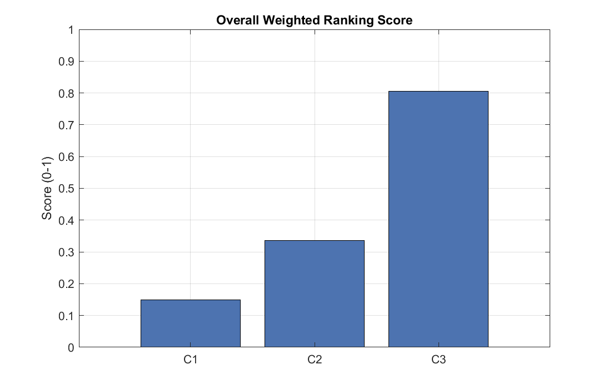
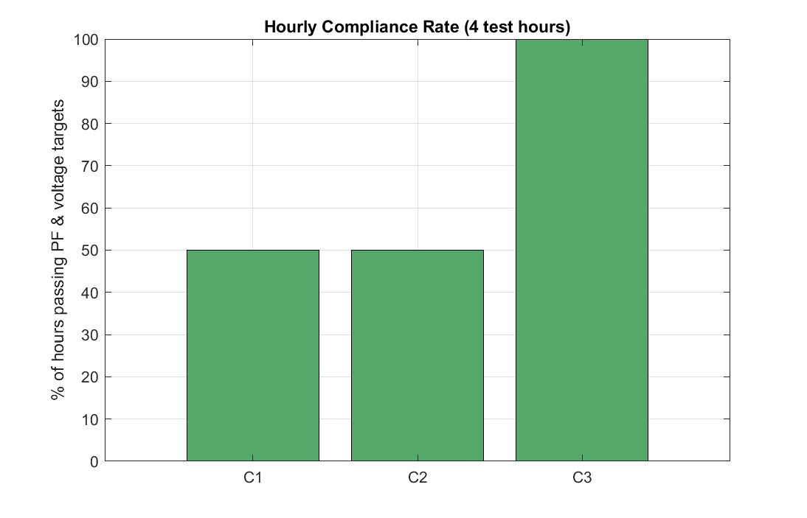
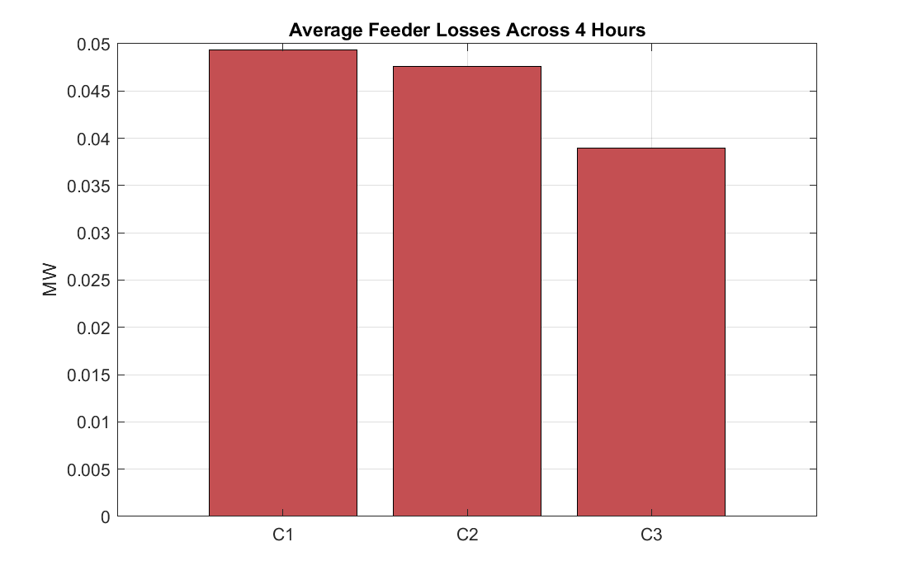
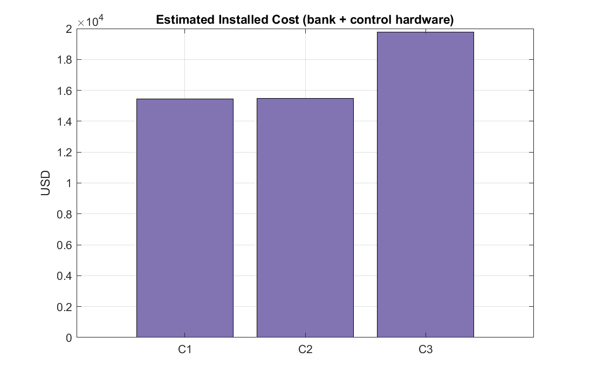
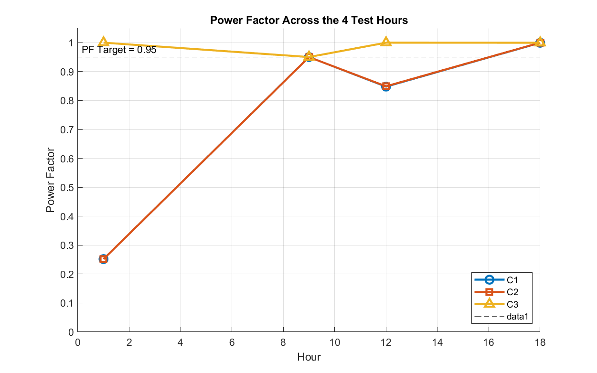

Generated by decision_support_ranking_hourly.m
| Hour | PF | Min V (pu) | Max V (pu) | Result |
|---|---|---|---|---|
| 1 | 0.2518 | 1.0000 | 1.0469 | FAIL |
| Suggested: Resize Capacitor, or Split Across Buses | ||||
| 9 | 0.9502 | 0.9520 | 1.0000 | PASS |
| 12 | 0.8480 | 1.0030 | 1.0270 | FAIL |
| Suggested: Resize Capacitor, or Split Across Buses | ||||
| 18 | 0.9996 | 0.9872 | 1.0000 | PASS |
2/4 hours pass (50%)
| Hour | PF | Min V (pu) | Max V (pu) | Result |
|---|---|---|---|---|
| 1 | 0.2518 | 1.0000 | 1.0469 | FAIL |
| Suggested: Resize Capacitor, or Split Across Buses | ||||
| 9 | 0.9500 | 0.9520 | 1.0000 | PASS |
| 12 | 0.8490 | 1.0000 | 1.0264 | FAIL |
| Suggested: Resize Capacitor, or Split Across Buses | ||||
| 18 | 1.0000 | 0.9872 | 1.0000 | PASS |
2/4 hours pass (50%)
| Hour | PF | Min V (pu) | Max V (pu) | Result |
|---|---|---|---|---|
| 1 | 1.0000 | 0.9983 | 1.0000 | PASS |
| 9 | 0.9502 | 0.9520 | 1.0000 | PASS |
| 12 | 0.9999 | 1.0000 | 1.0000 | PASS |
| 18 | 0.9996 | 0.9872 | 1.0000 | PASS |
4/4 hours pass (100%)
| Scenario | Avg Loss (MW) |
|---|---|
| C1 | 0.0494 |
| C2 | 0.0476 |
| C3 | 0.0390 |
| Scenario | Fault Margin | Nameplate (Mvar) | Cost (USD) |
|---|---|---|---|
| C1 | 11.3% | 1.3442 | $15458 |
| C2 | 12.1% | 1.3450 | $15468 |
| C3 | 11.9% | 1.3442 | $19758 |
Weights: compliance=0.35, PF margin=0.15, losses=0.20, fault=0.15, cost=0.15
| Scenario | Compliance | Avg PF Margin | Avg Loss (MW) | Fault Margin | Cost | Score |
|---|---|---|---|---|---|---|
| C1 | 50% | +0.0249 | 0.0494 | 11.3% | $15458 | 0.1500 |
| C2 | 50% | +0.0250 | 0.0476 | 12.1% | $15468 | 0.3355 |
| C3 | 100% | +0.0374 | 0.0390 | 11.9% | $19758 | 0.8062 |
Highest-ranked scenario: C3 (score = 0.8062)
This ranking is advisory only -- the engineer makes the final design call.
| # | Factor | Winner |
|---|---|---|
| 1 | Compliance rate | C3 (100%) |
| 2 | Avg PF margin | C3 (+0.0374) |
| 3 | Avg losses | C3 (0.0390 MW, lowest) |
| 4 | Fault margin | C2 (12.1%) |
| 5 | Cost | C1 ($15458, cheapest) |




